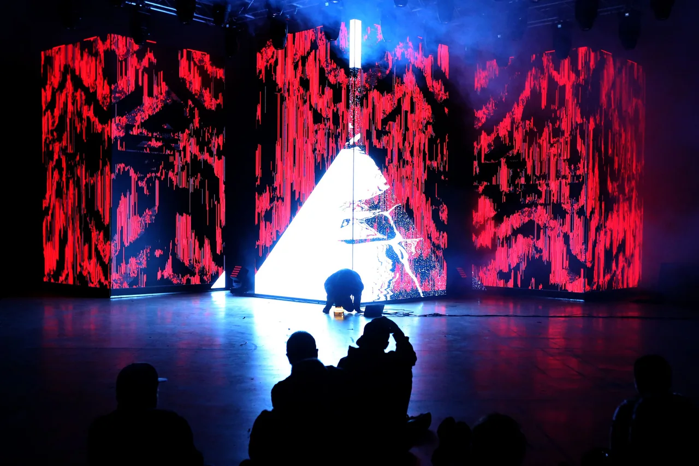

Colapso
2022
Live A/V performance
Thirty days
Colapso
An audiovisual performance exploring the concept of collapse through a digital environment interacting with sound.
Set of music and image generated in real time. Both systems communicate and respond to each other. Sound transforms the visual landscape generated. As time passes, the visual system starts to collapse and take over control, destroying any balance on the harmonic structures established. The main theme explored is the balance between the progress of human creation, and destructive patterns as unavoidable forces of entropy. The impossibility of abstraction to overcome nature as time passes.
Performance footage
